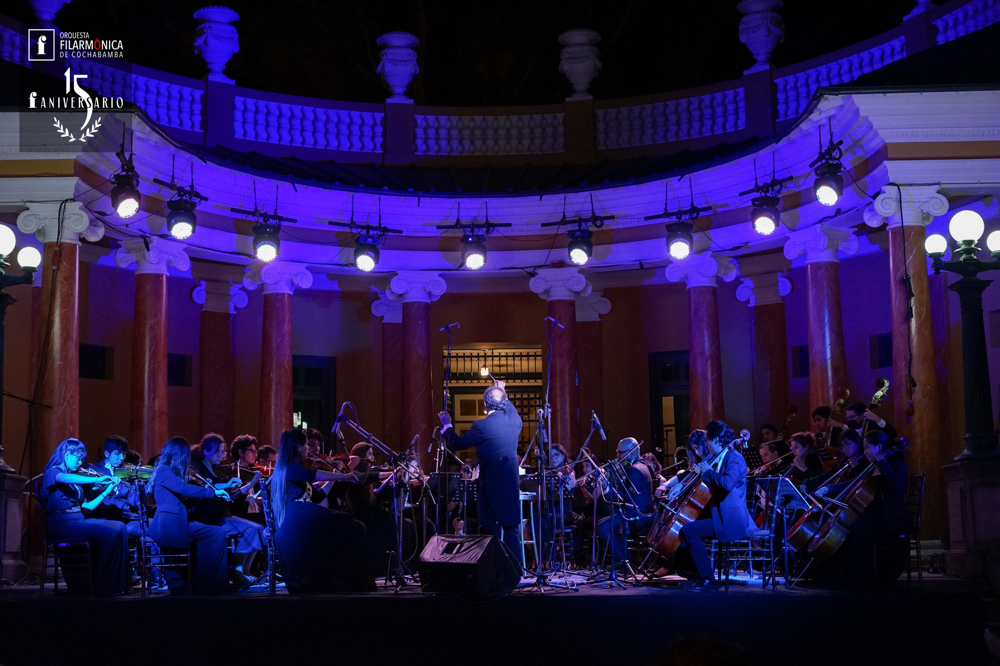
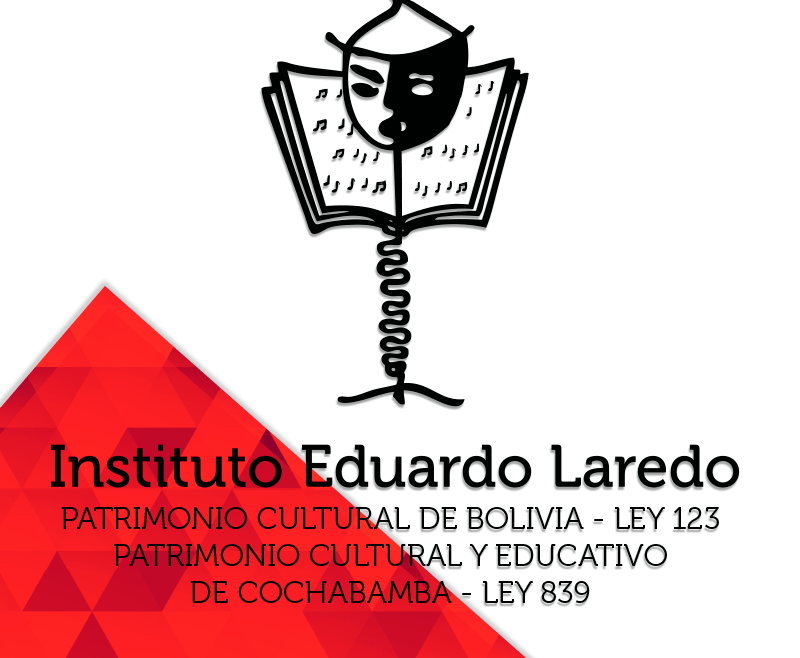
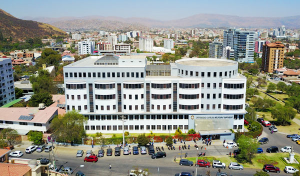
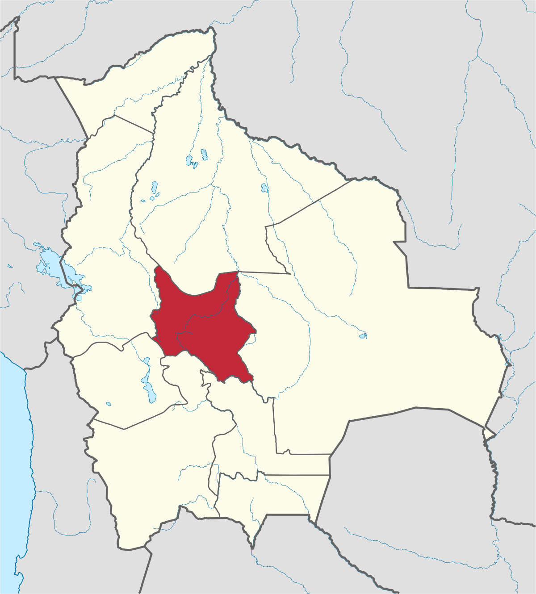

Mi nombre es Nicolas Vidal, soy un estudiante de la carrera de Ingeniería de Sistemas en la Universidad Católica Boliviana. Nací en la ciudad de Cochabamba-Bolivia, tengo 19 años y me gradué del Instituto Eduardo Laredo el año 2020. En este colegio descubrí una de las que hoy en día es una de mis pasiones, tocar violín. Gracias a esto se me dio la oportunidad de poder trabajar en la Orquesta Filarmónica de Cochabamba.
Disfruto mucho de ver películas, jugar cualquier tipo de videojuegos, aunque tengo una cierta preferencia por lo creados por Nintendo, y me gusta mucho jugar al fútbol, en especial en la posición de arquero, lo que me llevó a estar en el equipo de fútbol de mi colegio.
El año 2020, después de 8 años de estudio con el violín conseguí mi título de técnico medio en el instrumento, además
Disfruto mucho de ver películas, jugar cualquier tipo de videojuegos, aunque tengo una cierta preferencia por lo creados por Nintendo, y me gusta mucho jugar al fútbol, en especial en la posición de arquero, lo que me llevó a estar en el equipo de fútbol de mi colegio.
El año 2020, después de 8 años de estudio con el violín conseguí mi título de técnico medio en el instrumento, además

La Filarmónica de Cochabamba es una Orquesta creada y dirigida por Augusto Guzman, se fundó el 2007 y sigue vigente hoy en día. Mas información.

El Instituto Eduardo Laredo es un colegio de formación integral, donde combina las materias de humanidades con la música. Más información.

La Universidad Católica Boliviana es una universidad privada con sedes en distintas partes del país, la de la imagén es en Cochabamba. Más información.

Cochabamba, el corazón de Bolivia, la querida Llajta. Más información.
CONOCIMIENTOS DE PROGRAMACION
Empecé a estudiar programación desde el año 2021, y hoy en día en cuanto a saber temas de programación como los lenguajes o incluso la lógica aun me considero un gran aprendiz, me falta muchísimo por aprender, pero disfruto mucho de esto, podríamos decir que entrontré otra pasión en la programación.
Considero que C++ es el idioma que actualmente mejor sé, pero también puedo manejar un poco de HTML y de CSS, mi meta es aprender mucho más sobre estos idiomas ya que descubrí que que me gustan mucho.
Considero que C++ es el idioma que actualmente mejor sé, pero también puedo manejar un poco de HTML y de CSS, mi meta es aprender mucho más sobre estos idiomas ya que descubrí que que me gustan mucho.